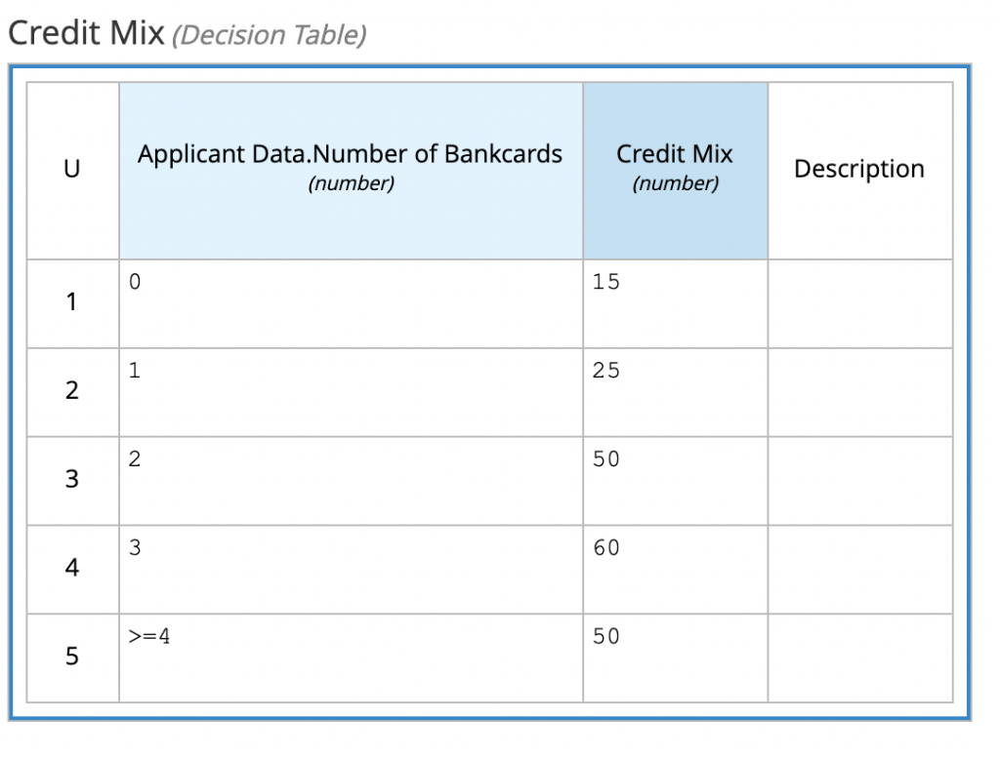
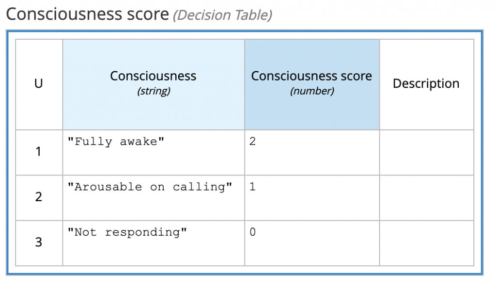
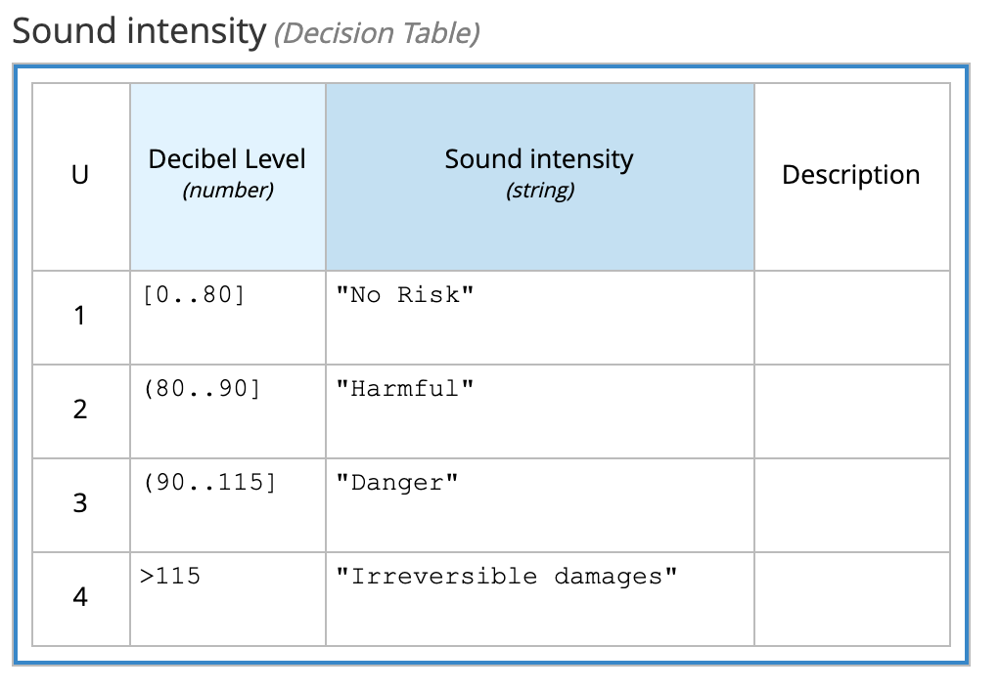
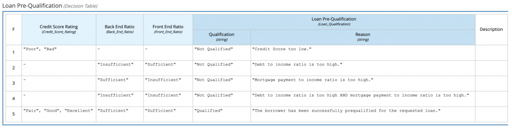
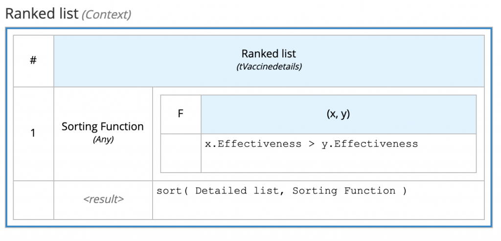

How to Capture Business Decisions using DMN: Introduction to Some Basic Patterns and Their Value
I am very glad for the opportunity to have presented at IIBA this session on DMN patterns with Denis Gagné CEO & CTO of Trisotech!
- how business analysts can use the DMN open-standard to capture the requirements for operational business decisions
- some of the recurring basic patterns in modeling (Q&A, Scoring, Classification and Categorisation, Ranking..)
- how to transform these decision models into actual executable business decision services
In the following you can find the recording, as well as a brief summary of some key highlights for the patterns.
Webinar recording
Businesses continuously make Business Decisions. Some of these decisions are strategic business decisions, but a lot are operational business decisions taken every day within every transaction. With the ever-increasing number of laws and regulations that may apply or regulate these operational business decisions, business analysts are more often called upon to document/specify how these business decisions are to be taken in order to provide transparency and to offer auditable traces of the actual decisions taken. In this insightful session, we will introduce how business analysts can use DMN to capture the requirements for operational business decisions, some of the recurring basic patterns in modeling these business decisions and will even show how to transform these decision models into actual executable business decision services.
Pattern: Q&A
Not to be confused with the generally applicable multiple-choice paradigm, on of the key aspects of DMN models is that each Decision is meant to answer a question, usually a business related question or a domain question.
This Q&A pattern is a built-in of the DMN standard, thanks to the optional attributes "question" and "allowedAnswers", which business analyst and subject matter expert modelers often use to describe using natural language to complement the modeled decision logic semantic.
Pattern: Scoring
Input variables, described as InputData, are often analysed and weighted into a score, typically to be later used in the DMN model with other patterns (such as categorisation) or directly with decision logic such as thresholds.
Examples:


Pattern: Classification
In this pattern, model variables are recognized, differentiated and classified to be better understood; usually this is done to verbalise classes and often using a Score as an input (ref above).
It is important to be aware of several types of classification:
- Classification: separating based on class labels
- Clustering: separating based similarities without class labels
- Categorization: subsuming classes (to realize a taxonomy)
- Segmentation: complete and disjunct categorization
Examples:


Pattern: Ranking
In this pattern, the position, or rank, of each item in a collection is determined. This pattern is usually a bit more complex to implement if compared to the previous one, requiring iteration with sorting. Fortunately the DMN standard gives all the tools to implement this pattern more easily!
For example:

Transform DMN models into executable business decision services
Have you found this content interesting? Don’t forget a great advantage of DMN models is that they can be immediately deployed as executable services, thanks to the Drools DMN engine and Kogito!